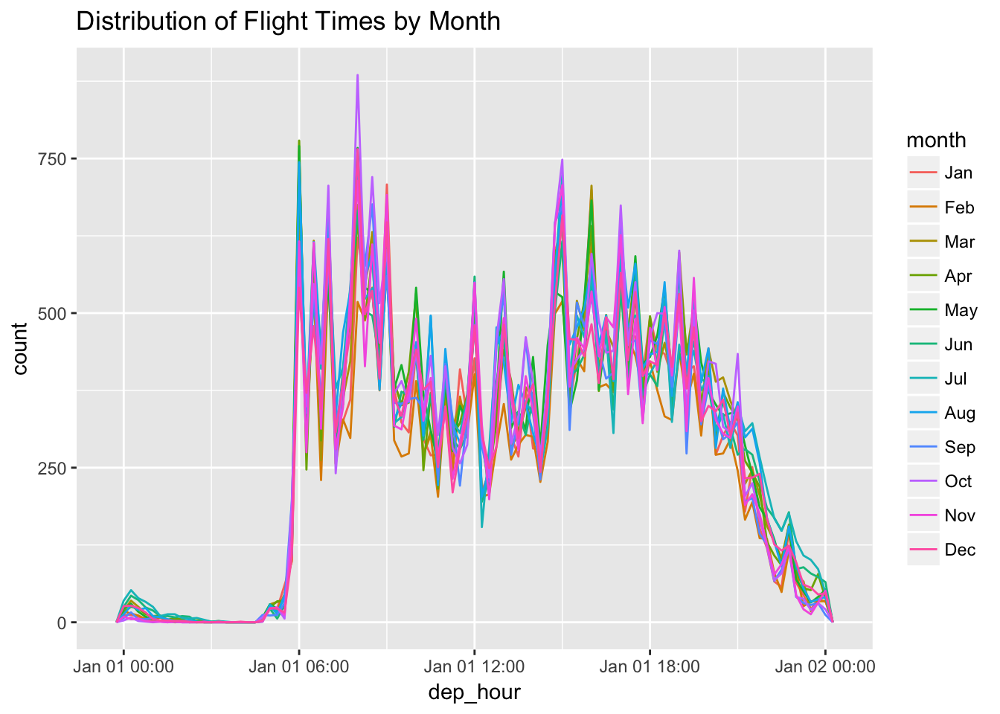
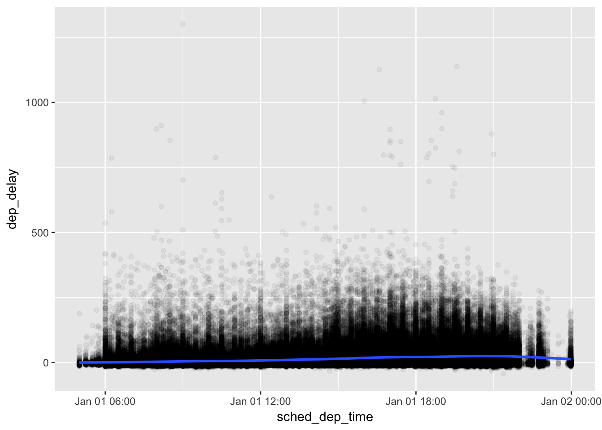
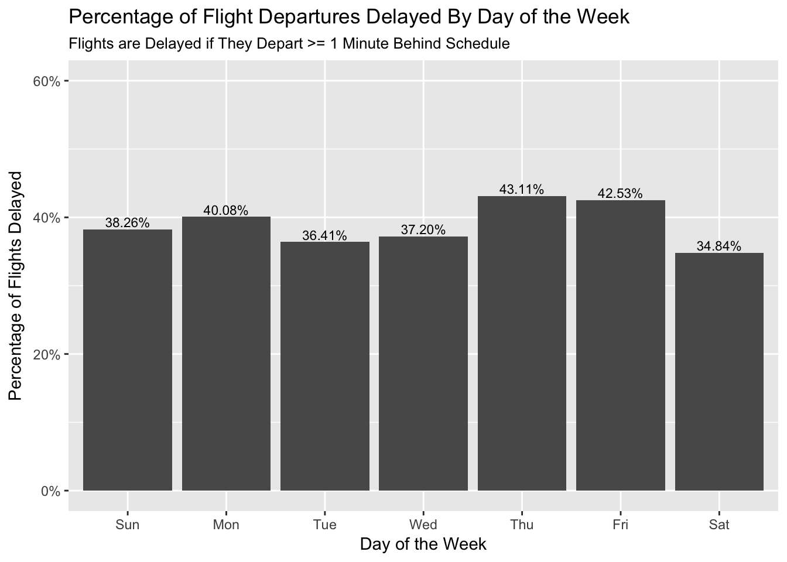
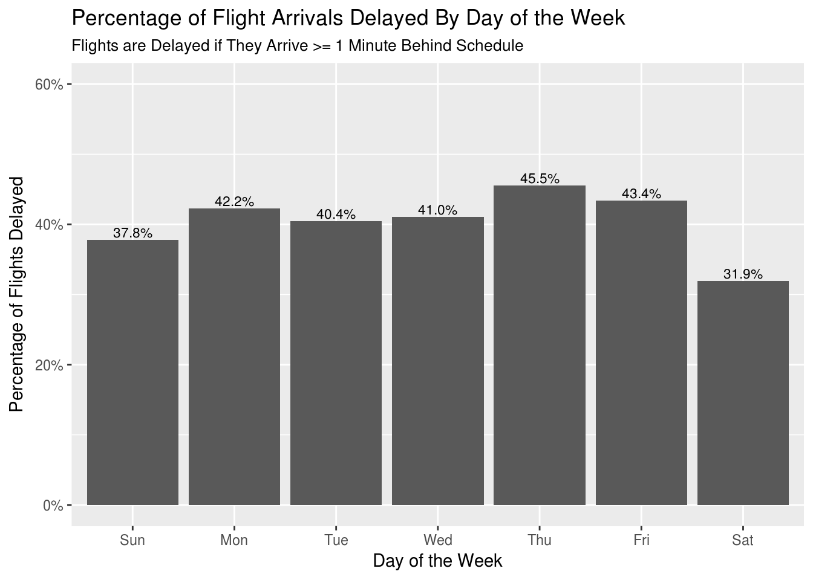
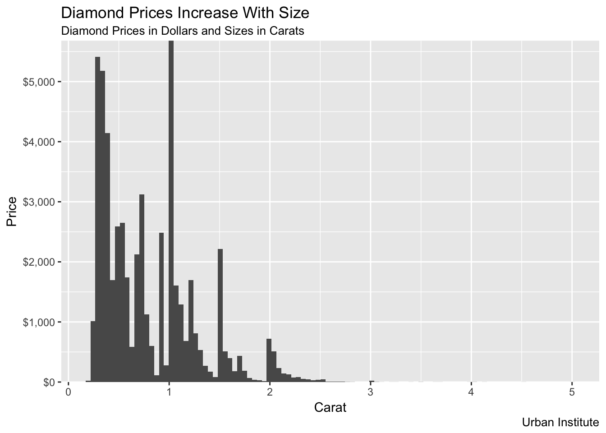
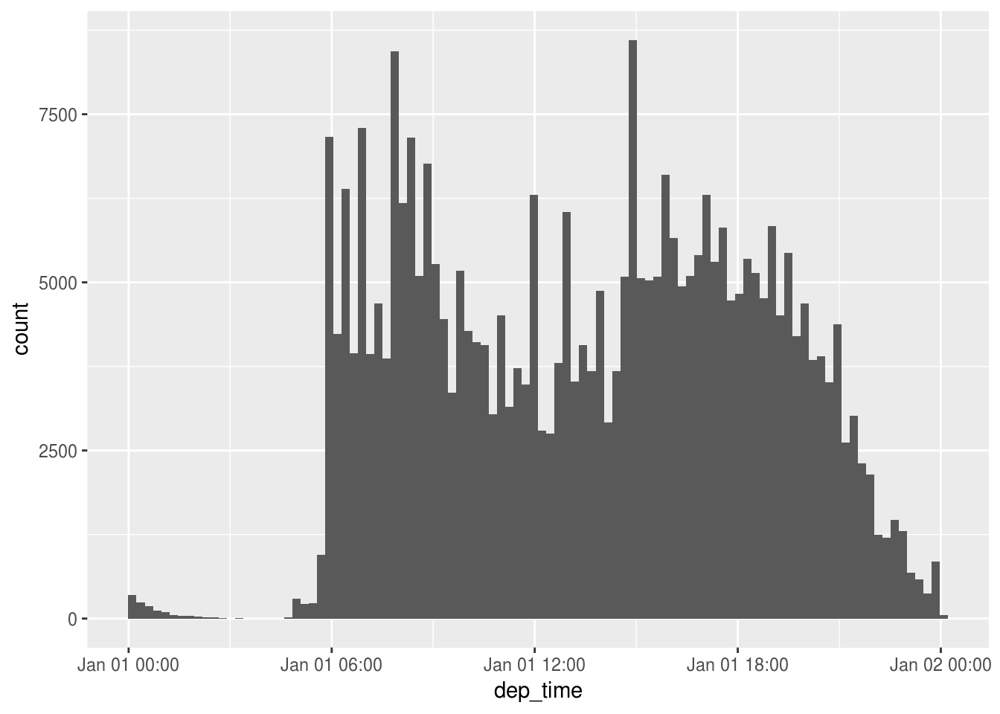
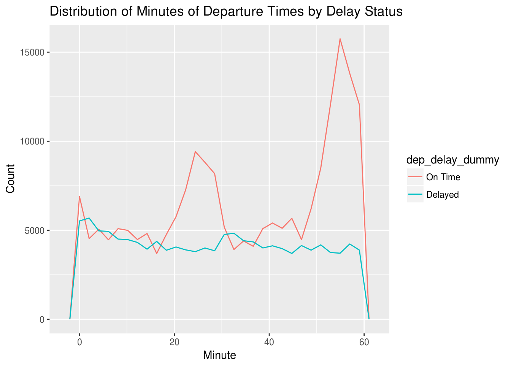

Chapter 16 - Dates and times
Load the libraries needed for these exercises.
library(tidyverse)
library(lubridate)
library(nycflights13)16.2 - Creating date/times
Problem 1
What happens if you parse a string that contains invalid dates?
ymd(c("2010-10-10", "bananas"))## Warning: 1 failed to parse.## [1] "2010-10-10" NAWarning message: 1 failed to parse.
Problem 2
What does the tzone argument to today() do? Why is it important?
tzone controls the time zone used when finding the current date. It defaults to the system time zone. It is important because every hour a different time zone moves from today to tomorrow and when analyzing data from another time zone dates can change.
Problem 3
Use the appropriate lubridate function to parse the following dates:
d1 <- "January 1, 2010"
d2 <- "2015-Mar-07"
d3 <- "06-Jun-2017"
d4 <- c("August 19 (2015)", "July 1 (2015)")
d5 <- "12/30/14" # Dec 30, 2014
mdy(d1)## [1] "2010-01-01"ymd(d2)## [1] "2015-03-07"dmy(d3)## [1] "2017-06-06"mdy(d4)## [1] "2015-08-19" "2015-07-01"mdy(d5)## [1] "2014-12-30"16.3 - Date-time components
make_datetime_100 <- function(year, month, day, time) {
make_datetime(year, month, day, time %/% 100, time %% 100)
}
flights_dt <- flights %>%
filter(!is.na(dep_time), !is.na(arr_time)) %>%
mutate(
dep_time = make_datetime_100(year, month, day, dep_time),
arr_time = make_datetime_100(year, month, day, arr_time),
sched_dep_time = make_datetime_100(year, month, day, sched_dep_time),
sched_arr_time = make_datetime_100(year, month, day, sched_arr_time)
) %>%
select(origin, dest, ends_with("delay"), ends_with("time"))Problem 1
How does the distribution of flight times within a day change over the course of the year?
flights_dt %>%
mutate(dep_hour = update(dep_time, yday = 1),
month = month(dep_time, label = TRUE)) %>%
ggplot(aes(dep_hour, color = month)) +
geom_freqpoly(binwidth = 900) +
labs(title = "Distribution of Flight Times by Month")
Problem 2
Compare dep_time, sched_dep_time, and dep_delay. Are they consistent? Explain your findings.
dep_time, sched_dep_time, and dep_delay are mostly consistent. The only issue is when delays extend past midnight. The value for day doesn’t increase for dep_time when a a flight is delayed beyond its scheduled day.
flights_dt %>%
mutate(dep_time2 = sched_dep_time + dep_delay * 60) %>%
filter(dep_time != dep_time2) %>%
select(sched_dep_time, dep_time, dep_time2)## # A tibble: 1,205 x 3
## sched_dep_time dep_time dep_time2
## <dttm> <dttm> <dttm>
## 1 2013-01-01 18:35:00 2013-01-01 08:48:00 2013-01-02 08:48:00
## 2 2013-01-02 23:59:00 2013-01-02 00:42:00 2013-01-03 00:42:00
## 3 2013-01-02 22:50:00 2013-01-02 01:26:00 2013-01-03 01:26:00
## 4 2013-01-03 23:59:00 2013-01-03 00:32:00 2013-01-04 00:32:00
## 5 2013-01-03 21:45:00 2013-01-03 00:50:00 2013-01-04 00:50:00
## 6 2013-01-03 23:59:00 2013-01-03 02:35:00 2013-01-04 02:35:00
## 7 2013-01-04 23:59:00 2013-01-04 00:25:00 2013-01-05 00:25:00
## 8 2013-01-04 22:45:00 2013-01-04 01:06:00 2013-01-05 01:06:00
## 9 2013-01-05 23:59:00 2013-01-05 00:14:00 2013-01-06 00:14:00
## 10 2013-01-05 22:30:00 2013-01-05 00:37:00 2013-01-06 00:37:00
## # ... with 1,195 more rowsProblem 3
Compare air_time with the duration between the departure and arrival. Explain your findings. (Hint: consider the location of the airport.)
TODO(aaron):
There is no way to explain my findings.
flights_dt %>%
mutate(air_time_calc = as.numeric(arr_time - dep_time),
air_time_diff = air_time - air_time_calc) %>%
select(origin, dest, air_time, air_time_calc, air_time_diff)## # A tibble: 328,063 x 5
## origin dest air_time air_time_calc air_time_diff
## <chr> <chr> <dbl> <dbl> <dbl>
## 1 EWR IAH 227 193 34
## 2 LGA IAH 227 197 30
## 3 JFK MIA 160 221 -61
## 4 JFK BQN 183 260 -77
## 5 LGA ATL 116 138 -22
## 6 EWR ORD 150 106 44
## 7 EWR FLL 158 198 -40
## 8 LGA IAD 53 72 -19
## 9 JFK MCO 140 161 -21
## 10 LGA ORD 138 115 23
## # ... with 328,053 more rowsProblem 4
How does the average delay time change over the course of a day? Should you use dep_time or sched_dep_time? Why?
The average delay time increases slightly over the course of a day. This makes sense. Events that delay flights, like weather, mechanical issues, and pilot flight limits, accumulate over the course of the day and increase the probability of a flight being delayed.
sched_dep_time or dep_time could make sense. sched_dep_time is more useful if you’re planning on scheduling a flight and want to avoid delays!
flights_dt %>%
mutate(sched_dep_time = update(sched_dep_time, yday = 1)) %>%
ggplot(aes(sched_dep_time, dep_delay)) +
geom_point(alpha = 0.05) +
geom_smooth()
Problem 5
On what day of the week should you leave if you want to minimize the chance of a delay?
Saturday boasts the lowest percentage of flights that have delayed departures and delayed arrivals.
flights_dt %>%
mutate(day_of_week = wday(dep_time, label = TRUE),
delayed = ifelse(dep_delay > 0, 1, 0)) %>%
group_by(day_of_week) %>%
summarize(delay_prob = mean(delayed)) %>%
ggplot(aes(day_of_week, delay_prob)) +
geom_bar(stat = "identity") +
geom_text(aes(label = scales::percent(delay_prob)), vjust = -0.25, size = 3) +
scale_y_continuous(labels = scales::percent, limits = c(0, 0.6)) +
labs(title = "Percentage of Flight Departures Delayed By Day of the Week",
subtitle = "Flights are Delayed if They Depart >= 1 Minute Behind Schedule",
x = "Day of the Week",
y = "Percentage of Flights Delayed")
flights_dt %>%
mutate(day_of_week = wday(arr_time, label = TRUE),
delayed = ifelse(arr_delay > 0, 1, 0)) %>%
group_by(day_of_week) %>%
summarize(delay_prob = mean(delayed, na.rm = TRUE)) %>%
ggplot(aes(day_of_week, delay_prob)) +
geom_bar(stat = "identity") +
geom_text(aes(label = scales::percent(delay_prob)), vjust = -0.25, size = 3) +
scale_y_continuous(labels = scales::percent, limits = c(0, 0.6)) +
labs(title = "Percentage of Flight Arrivals Delayed By Day of the Week",
subtitle = "Flights are Delayed if They Arrive >= 1 Minute Behind Schedule",
x = "Day of the Week",
y = "Percentage of Flights Delayed")
Problem 6
What makes the distribution of diamonds$carat and flights_dep_time similar?
Humans round. In the case of the diamonds, they always round up!
ggplot(data = diamonds, mapping = aes(x = carat)) +
geom_histogram(bins = 100) +
scale_y_continuous(expand = c(0, 0), labels = scales::dollar) +
labs(title = "Diamond Prices Increase With Size",
subtitle = "Diamond Prices in Dollars and Sizes in Carats",
caption = "Urban Institute",
x = "Carat",
y = "Price"
)
flights_dt %>%
mutate(dep_time = update(dep_time, yday = 1)) %>%
ggplot(aes(dep_time)) +
geom_histogram(bins = 100)
Problem 7
Confirm my hypothesis that the early departures of flights in minutes 20-30 and 50-60 are caused by scheduled flights that leave early. Hint: create a binary variable that tells whether or not the flight was delayed.
Early departures of scheduled flights in minutes 20-30 and minutes 50-60 is definitely a contributing factor to the disuniform distribution of average delay times on page 245.
flights_dt %>%
mutate(Minute = minute(dep_time),
dep_delay_dummy = ifelse(dep_delay > 0, 1, 0),
dep_delay_dummy = factor(dep_delay_dummy, labels = c("On Time", "Delayed"))) %>%
ggplot(aes(Minute, color = dep_delay_dummy)) +
geom_freqpoly() +
labs(title = "Distribution of Minutes of Departure Times by Delay Status",
y = "Count")
16.4 - Time spans
Problem 1
Why is there months() but no dmonths()?
Unlike hours, days, and weeks, the number of months in a year never varies.
Problem 2
Explaindays(overnight * 1) to someone who has just started learning R. How does it work?
Overnight is a logical vector where TRUE == 1 and FALSE == 0. If it’s an overnight flight, days() add 23, 24, or 25 hours to the value depending on the day of the year. I am unsure why * 1 is necessary.
Problem 3
Create a vector of dates giving the first day of every month in 2015. Create a vector of dates giving the first day of every month in the current year.
ymd("2015-01-01") + months(0:11)## [1] "2015-01-01" "2015-02-01" "2015-03-01" "2015-04-01" "2015-05-01"
## [6] "2015-06-01" "2015-07-01" "2015-08-01" "2015-09-01" "2015-10-01"
## [11] "2015-11-01" "2015-12-01"floor_date(today(), unit = "year") + months(0:11)## [1] "2018-01-01" "2018-02-01" "2018-03-01" "2018-04-01" "2018-05-01"
## [6] "2018-06-01" "2018-07-01" "2018-08-01" "2018-09-01" "2018-10-01"
## [11] "2018-11-01" "2018-12-01"Problem 4
Write a function that, given your birthday (as a date), returns how old you are in years.
age <- function(birthday) {
(birthday %--% today()) / dyears(1)
}
age(ymd("1992-03-14"))## [1] 26.2274Problem 5
Why can’t (today() %--% (today() + years(1)) / months(1) work?
There is an uneven number of parentheses.